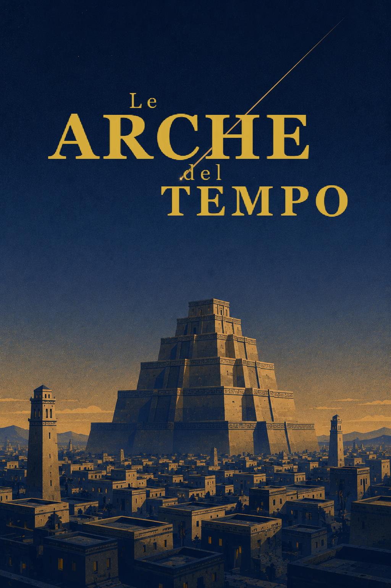

Acquista

Fantascienza ♦ Mistero ♦ Young adult
L'edizione cartacea non è ancora disponibile.
Segui il progetto per sapere tutto sulla pubblicazione!
Come puoi sostenere il progetto
Fai sapere che esiste
Se il romanzo ti sta piacendo, condividilo con chi potrebbe apprezzarlo. Il passaparola è il modo più semplice e più prezioso per aiutare un progetto indipendente.
Continua la lettura online
L'intero romanzo è disponibile gratuitamente sul sito e viene aggiornato nel tempo. Lascia un commento sotto ogni capitolo che leggi!
LeggiScarica il manoscritto completo
Preferisci leggere offline? Puoi scaricare il manoscritto completo e contribuire alla versione definitiva segnalando refusi, errori o suggerimenti.
Scarica PDF Scarica EPUBQuesto PDF è gratuito e destinato alla lettura personale. Rispetta il lavoro dell'autore: non modificare il testo, non attribuirne i meriti a nessun altro e non utilizzarlo per fini commerciali. Versione file: v4.4